Derivation colors · sand terraces · green enclosures · violet transitions · red source features
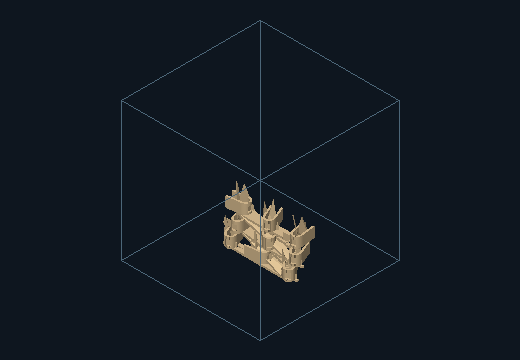
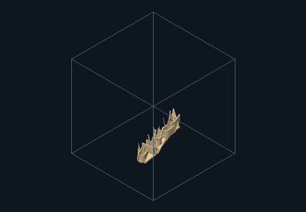
Source features, component provenance and measurements
| Instance | Source / role | Region / elevation | Yaw / tilt |
|---|---|---|---|
| instance-0 | 0 / L | 0 / 1.08 | 0 / 0 |
| instance-1 | 1 / U | 0 / 1.08 | 15 / 0 |
| instance-2 | 2 / V | 0 / 1.08 | 30 / 90 |
| instance-3 | 3 / L | 1 / 1.08 | 45 / 0 |
| instance-4 | 4 / U | 1 / 1.08 | 90 / 0 |
| instance-5 | 5 / V | 1 / 1.08 | 0 / 90 |
| instance-6 | 0 / L | 2 / 1.08 | 15 / 0 |
| instance-7 | 1 / U | 2 / 1.08 | 30 / 0 |
| instance-8 | 2 / V | 2 / 1.08 | 45 / 90 |
| instance-9 | 3 / L | 3 / 6.13 | 90 / 0 |
| instance-10 | 4 / U | 3 / 6.13 | 0 / 0 |
| instance-11 | 5 / V | 3 / 6.13 | 15 / 90 |
| instance-12 | 0 / L | 4 / 6.13 | 30 / 0 |
| instance-13 | 1 / U | 4 / 6.13 | 45 / 0 |
| instance-14 | 2 / V | 4 / 6.13 | 90 / 90 |
| instance-15 | 3 / L | 5 / 6.13 | 0 / 0 |
| instance-16 | 4 / U | 5 / 6.13 | 15 / 0 |
| instance-17 | 5 / V | 5 / 6.13 | 30 / 90 |
| instance-18 | 0 / L | 6 / 11.18 | 45 / 0 |
| instance-19 | 1 / U | 6 / 11.18 | 90 / 0 |
| instance-20 | 2 / V | 6 / 11.18 | 0 / 90 |
| instance-21 | 3 / L | 7 / 11.18 | 15 / 0 |
| instance-22 | 4 / U | 7 / 11.18 | 15 / 0 |
| instance-23 | 5 / V | 7 / 11.18 | 45 / 90 |
| instance-24 | 0 / L | 8 / 11.18 | 90 / 0 |
| instance-25 | 1 / U | 8 / 11.18 | 0 / 0 |
| instance-26 | 2 / V | 8 / 11.18 | 15 / 90 |
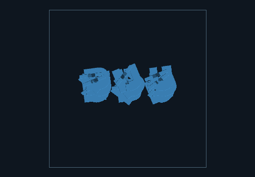
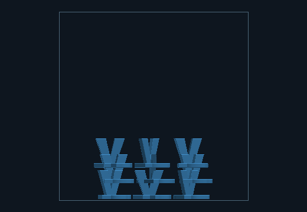
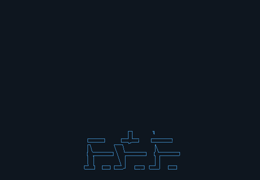
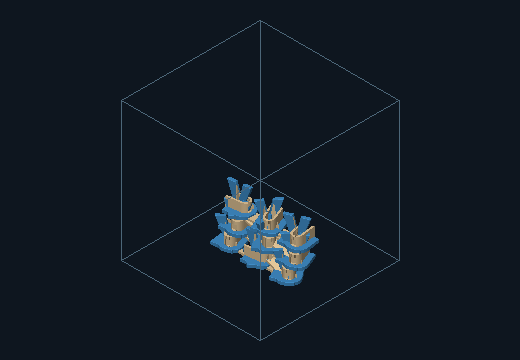
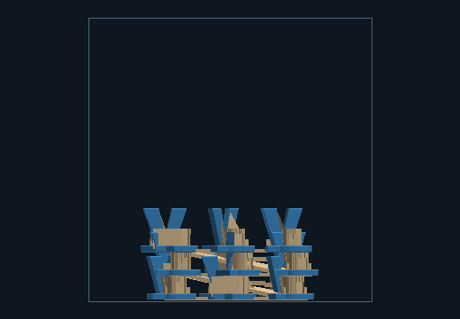
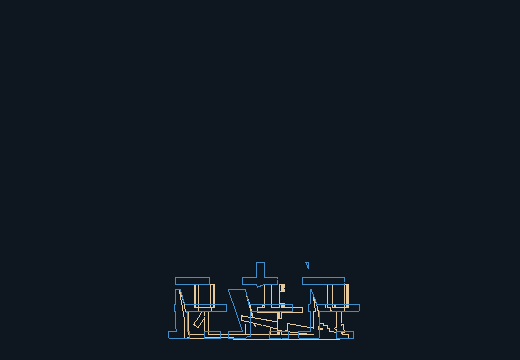
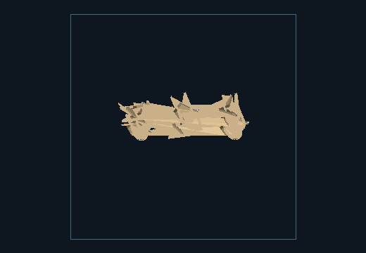
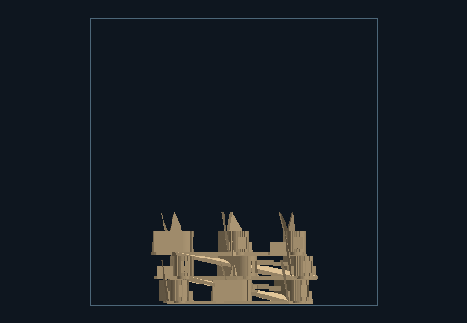
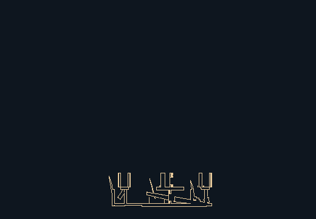
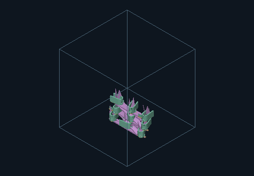
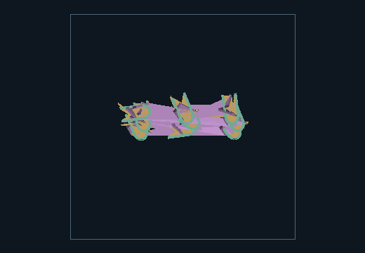
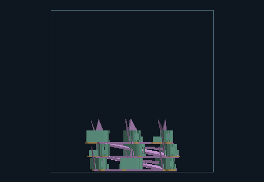
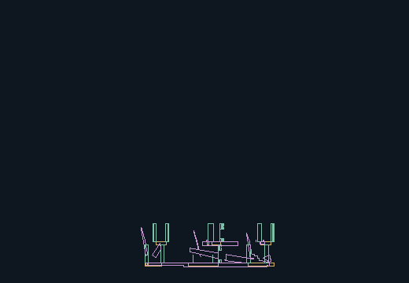
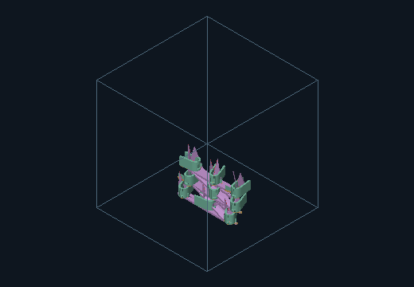
Source features, component provenance and measurements
| Instance | Source / role | Region / elevation | Yaw / tilt |
|---|---|---|---|
| instance-0 | 0 / L | 0 / 1.08 | 0 / 0 |
| instance-1 | 1 / U | 0 / 1.08 | 15 / 0 |
| instance-2 | 2 / V | 0 / 1.08 | 30 / 90 |
| instance-3 | 3 / L | 1 / 3.61 | 45 / 0 |
| instance-4 | 4 / U | 1 / 3.61 | 90 / 0 |
| instance-5 | 5 / V | 1 / 3.61 | 0 / 90 |
| instance-6 | 0 / L | 2 / 6.13 | 15 / 0 |
| instance-7 | 1 / U | 2 / 6.13 | 30 / 0 |
| instance-8 | 2 / V | 2 / 6.13 | 45 / 90 |
| instance-9 | 3 / L | 3 / 8.66 | 90 / 0 |
| instance-10 | 4 / U | 3 / 8.66 | 0 / 0 |
| instance-11 | 5 / V | 3 / 8.66 | 15 / 90 |
| instance-12 | 0 / L | 4 / 11.18 | 30 / 0 |
| instance-13 | 1 / U | 4 / 11.18 | 15 / 0 |
| instance-14 | 2 / V | 4 / 11.18 | 90 / 90 |
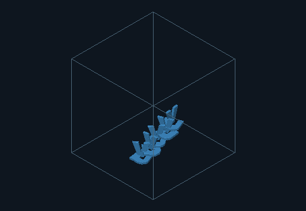
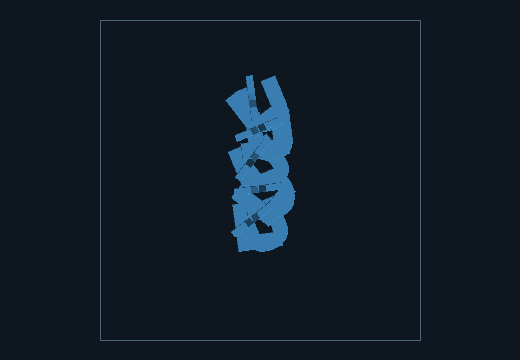
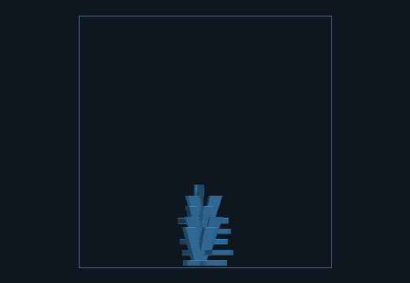
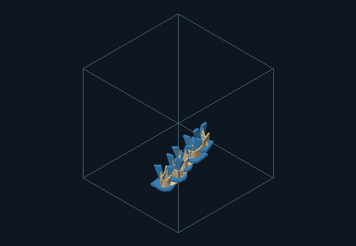
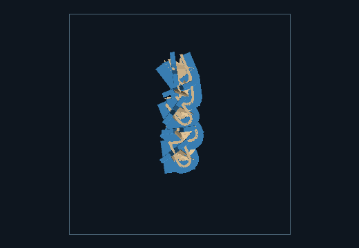
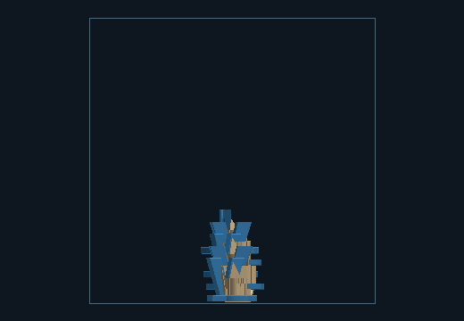
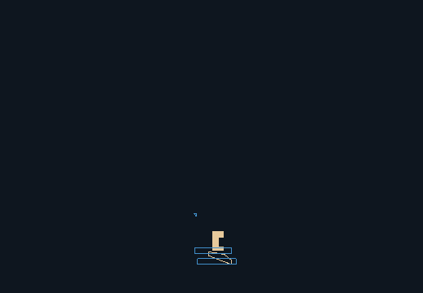
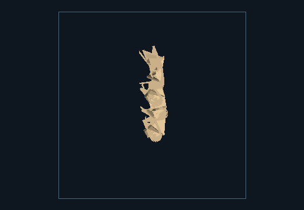
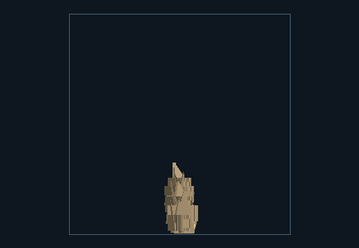
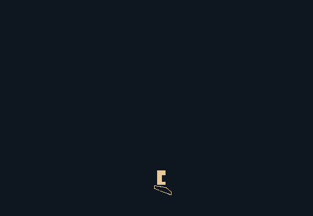
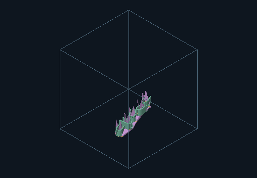
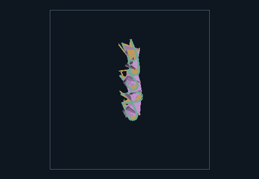
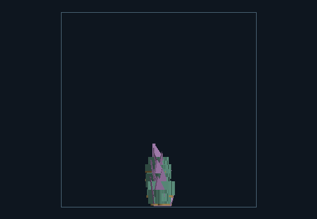
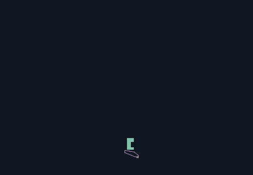
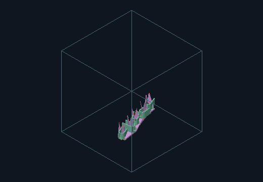